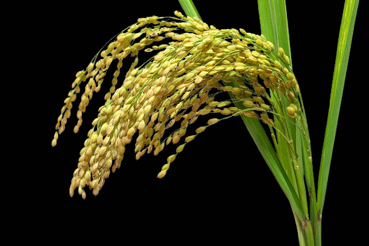
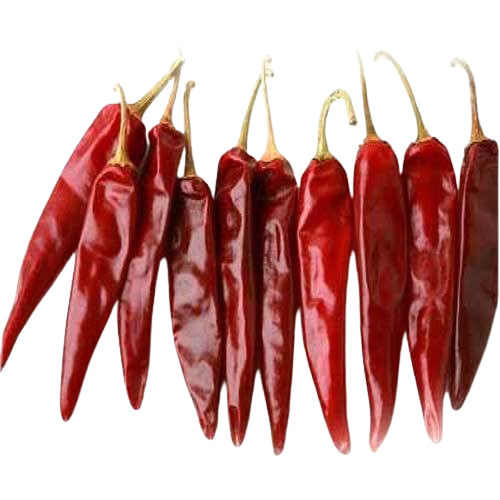
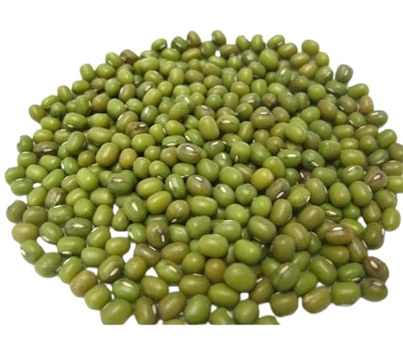
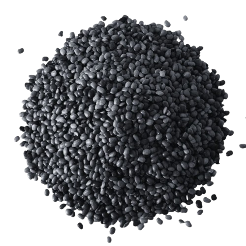

Most cultivated crops throughout Andhra Pradesh
Andhra Pradesh's agricultural diversity thrives with rice as the staple, followed by the famed Guntur chillies, mangoes, and groundnuts. Sugarcane flourishes in river basins, while maize dominates tribal regions. Cotton, essential for textiles, grows prominently in Telangana. The state is a significant producer of various pulses, meeting protein needs. Bananas, especially Dwarf Cavendish, are abundant, thanks to favorable climates. Vegetables like tomatoes, brinjal, and leafy greens add to the agricultural bounty. With a blend of traditional knowledge and modern techniques, Andhra Pradesh sustains a vibrant agricultural sector, enriching its economy and culinary heritage.
Here is a list of some of the most cultivated crops throughout Andhra Pradesh:
| Crop | Districts | Image |
|---|---|---|
| Rice |
|
 |
| Chillies |
|
 |
| Greengram (Moong Dal) |
|
 |
| Blackgram (Urad Dal) |
|
 |